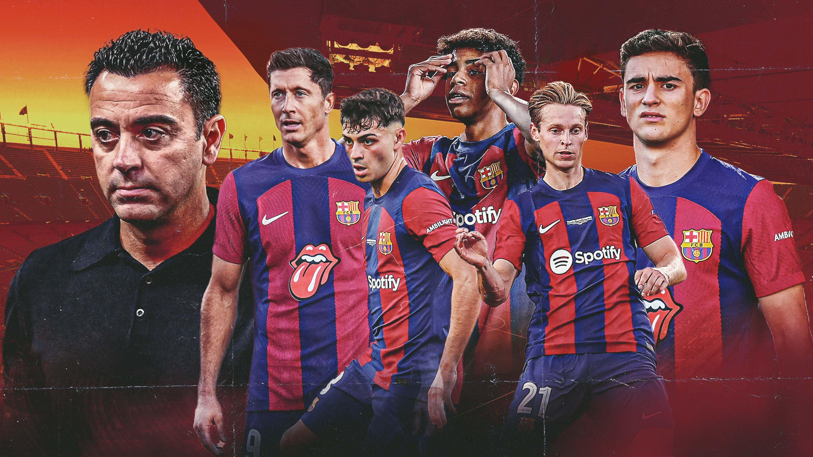

FC Barcelona

Retour
En Espagne, deux clubs ont une histoire particulière avec la Ligue des Champions. D’un côté le Real Madrid, de l’autre le FC Barcelone. Club représentant la capitale catalane, le Barça a vu, lui aussi, défiler des légendes du football sous ses couleurs. Si le nombre de titres est bien en deçà par rapport au Real Madrid, le FC Barcelone a tout de même une histoire particulière avec la Ligue des Champions et notamment contre un club français, considéré, par ses supporters, comme étant le plus grand en France.
Quel est le bilan du FC Barcelone en Ligue des Champions ?
Club historique en Espagne, le FC Barcelone en est aussi un sur la scène européenne et encore plus en Ligue des Champions. Au total, le club catalan est apparu en Ligue des Champions à 33 reprises pour un bilan de :
345 matchs
201 victoires
76 nuls
68 défaites
Cela représente un taux de victoires de 58,26% dans la plus prestigieuse compétition européenne.
Et parmi tous ces matchs, on se pose la question de savoir contre qui le FC Barcelone a joué le plus souvent et le ratio de victoire face à ces différents clubs :
Vs AC Milan : 10 matchs (8 victoires - 5 nuls - 4 défaites)
Vs Manchester United : 9 matchs (5 victoires - 4 nuls - 1 défaite)
Vs Inter Milan : 8 matchs (6 victoires - 4 nuls - 2 défaites)
Vs Juventus Turin : 8 matchs (4 victoires - 4 nuls - 3 défaites)
Vs Bayern Munich : 8 matchs (2 victoires - 1 nuls - 10 défaites)
Quels sont les meilleurs matchs du FC Barcelone en Ligue des Champions ?
Si bien entendu, les cinq finales remportées par le club catalan font bien évidemment partie des meilleurs matchs du FC Barcelone en Ligue des Champions. D’autres ont leur place dans le cœur des supporters culés. Et notamment un match qui s’est déroulé le soir du 8 mars 2017 face au Paris Saint-Germain. Battu 4-0 à l’aller et ayant moins d’1 % de chance de se qualifier pour le tour suivant, le FC Barcelone, renverse le match, bien aidé par l’arbitrage clément et un bloc bien trop désolidarisé du côté parisien, et remporte la partie sur le score mémorable de 6-1. Depuis, ce match est associé à un terme en particulier : “Remontada”.
De l’autre côté, le pire match du FC Barcelone est, sans aucun doute, le quart de finale unique joué face au Bayern Munich lors du Final 8 en 2020. Lionel Messi et compagnie s’étaient fait humilier 8 buts à 2 par les bavarois.
Retour sur les finales gagnées par le club catalan :
1991/1992 : victoire 1-0 face à l’UC Sampdoria
2005/2006 : victoire 2-1 face à Arsenal FC
2008/2009 : victoire 2-0 face à Manchester United
2010/2011 : victoire 3-1 face à Manchester United
2014/2015 : victoire 3-1 face à la Juventus Turin
Qui est le meilleur buteur du FC Barcelone en Ligue des Champions ?
Lors de ses différentes campagnes, le FC Barcelone a marqué 679 buts et en a encaissé 349. Cela représente, rapporté au nombre de matchs, 1,96 but marqué pour 1,01 but encaissé. Si l’on connaît bien évidemment le meilleur buteur du club en Ligue des Champions, qu’en est-il des neuf autres ?
Lionel Messi : 120 buts (soit 17 % des buts marqués du club dans la compétition)
Luis Suárez : 25
Rivaldo : 25
Neymar : 21
Patrick Kluivert : 20
Luis Enrique : 19
Samuel Eto’o : 16
Pedro : 15
Ronaldinho : 14
Gerard Piqué : 14
À noter que dans ce top 10, tous les joueurs cités ont soit changé de club, soit partis à la retraite. Le premier joueur portant actuellement la tunique culé et présent dans le classement des meilleurs buteurs de l’histoire du club dans la compétition est Robert Lewandowski (20e) avec 6 buts, à égalité avec Ferran Torres.